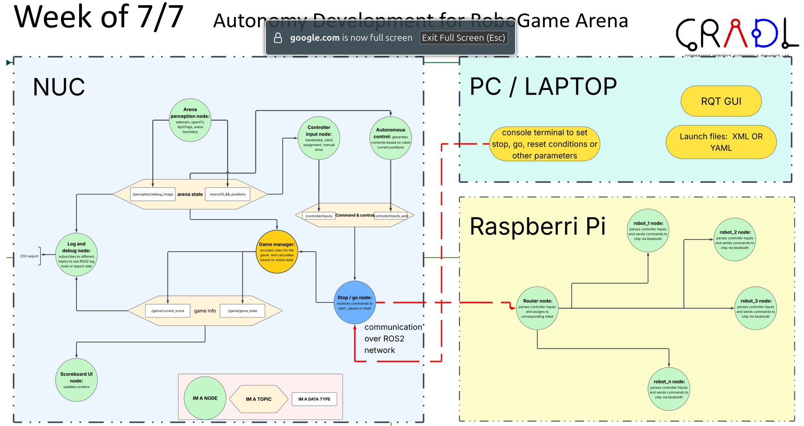
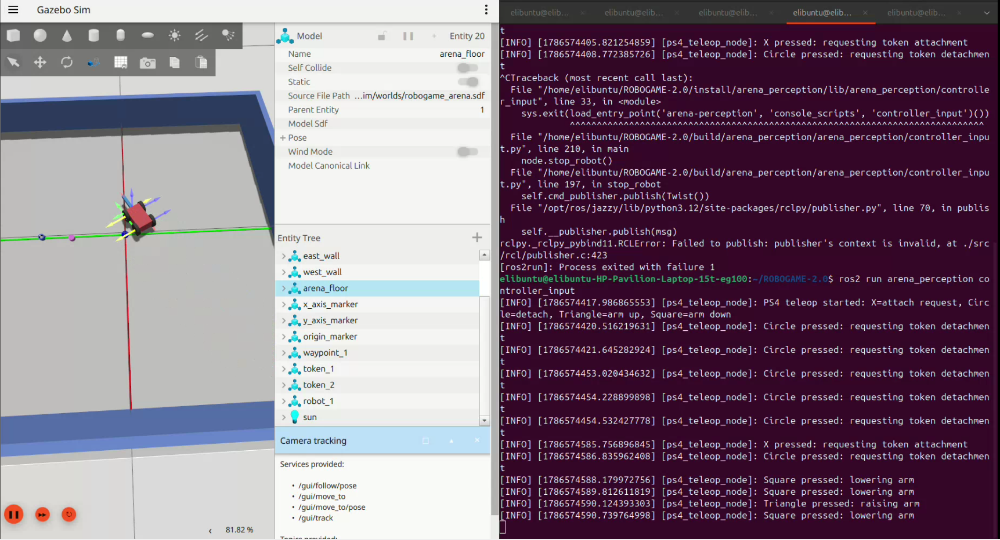

RoboGame is a multi-robot arena in which mobile robots locate, collect,
and transport colored tokens. The original system used a tightly
interconnected Python codebase that was difficult to debug, simulate,
and expand. Our team modernized the platform by developing a modular
ROS 2 architecture, a Gazebo digital twin, and a foundation for
autonomous token collection.

Fig. 1. Modular ROS 2 architecture developed for the RoboGame platform.
Video 1. Testing Computer Vision Node.
Key Contributions
Reorganized the system into reusable ROS 2 nodes for perception,
controller input, autonomous control, and physical robot communication.
Developed a Gazebo digital twin containing a differential-drive robot,
tokens, a movable collection arm, and simulated magnetic attachment.
Implemented standard ROS control interfaces, including
/cmd_vel, so the same commands could be used with simulated
and physical robots.
Added PS4 controller teleoperation for robot driving, arm positioning,
and magnetic token pickup and release.
Integrated robot and token odometry to support target tracking and
autonomous navigation.
Developed autonomous behaviors for closest-token selection, navigation
toward the selected token, and proximity-based pickup using a 5 cm
attachment constraint.
Established ROS 2 communication with a physical robot through a
Raspberry Pi, Bluetooth, and an ESP32 motor controller.
Created project documentation and beginner-oriented ROS 2 instructions
to help future teams operate and extend the platform.
Gazebo Digital Twin
The Gazebo environment models the physical RoboGame arena and reproduces
the robot's differential-drive motion, collection arm, and magnetic pickup
mechanism. Robot and token odometry are published through ROS 2 and used by
the autonomy node for navigation and pickup decisions.

Fig. 2. Gazebo digital twin used to test robot control and token pickup.
Control and Autonomy Pipeline
The autonomy node receives robot and token position data, calculates the
distance and heading to each token, selects the closest target, and
publishes velocity commands to the robot. Once the robot is within 5 cm
of the target, the system can lower the arm and activate the simulated
magnetic attachment.
Receive robot and token odometry.
Calculate the distance to each token.
Select the closest available token.
Rotate toward and navigate to the target.
Verify that the token is within the 5 cm pickup range.
Lower the collection arm and attach the token.
Transport and release the token.
Results
Demonstrated PS4-controlled robot navigation in Gazebo.
Simulated arm movement and magnetic token attachment.
Successfully tested token pickup, transportation, and release.
Implemented robot and token odometry tracking.
Tested autonomous target selection and navigation commands.
Used common ROS interfaces for teleoperation and autonomous control.
Demonstrated physical robot motor control using ROS
/cmd_vel commands.
Video 2. PS4-controlled token pickup, transportation, and release in Gazebo.
Current Status and Future Work
The project established a working foundation for autonomous control and
validated the core behaviors in Gazebo. Future development will focus on
improving navigation and pickup reliability, expanding the simulation to
multiple robots and tokens, and deploying the complete autonomy pipeline
on the physical RoboGame arena.